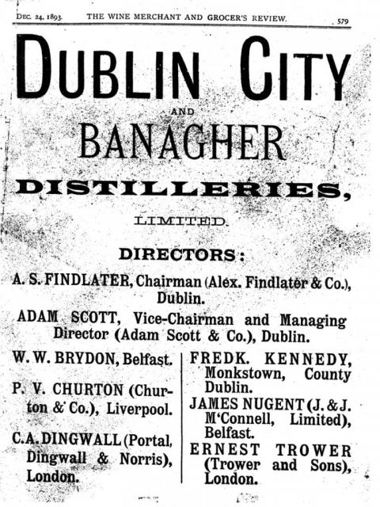

NOTE: This forum is no longer active. This is an archive copy of the forum as it was on 10 March 2018.
INFO. ON BANAGHER AND BIRR DISTILLERIES PLEASE
9 posts
• Page 1 of 1
INFO. ON BANAGHER AND BIRR DISTILLERIES PLEASE
 by paddy1 » Fri Sep 19, 2014 9:38 am
by paddy1 » Fri Sep 19, 2014 9:38 am
Has anyone any info. on the Birr and Banagher Co. Offaly distilleries or point us in the right direction to get some info.?
- paddy1
- New Spirit
- Posts: 30
- Joined: Fri Sep 12, 2014 1:00 pm
Re: INFO. ON BANAGHER AND BIRR DISTILLERIES PLEASE
 by IrishWhiskeyChaser » Fri Sep 19, 2014 2:03 pm
by IrishWhiskeyChaser » Fri Sep 19, 2014 2:03 pm
paddy1 wrote:Has anyone any info. on the Birr and Banagher Co. Offaly distilleries or point us in the right direction to get some info.?
Hi Ken,
Don't have a lot really to go on really.
The book "The Whiskey Distilleries of the United Kingdom" by Alfred Barnard first published 1887 is an invaluable sorce of general info for the majority of Irish Distilleries that were up and running of that time.
It does have a page dedicated to Birr (also know as Parsonstown) but nothing on Banagher
Brian Townsend also has a bit on Birr in his excelletn read "The Lost Distilleries of Ireland" first published 1997.
I reckon that Townsend would have researched the Barnard tomb for his but both well worth purchasing if your researching the historical past of Irish Distilling.
Lastly the National online Census is always a handy to determin the owners of Distilleries at particular dates.
Hope this helps you in a small way but by no means expansive info in these.
Sláinte Adrian
- IrishWhiskeyChaser
- Site Admin
- Posts: 2910
- Joined: Tue Mar 17, 2009 1:37 pm
- Location: A Dark Dunnage somewhere in Galway
Re: INFO. ON BANAGHER AND BIRR DISTILLERIES PLEASE
 by PureDrop » Fri Sep 19, 2014 11:15 pm
by PureDrop » Fri Sep 19, 2014 11:15 pm
Click on the link below to jump to its location on the old 25" map
http://maps.osi.ie/publicviewer/#V1,601513,713869,7,9
(If you select "Historic Layers" then "Distillery", you can locate distilleries all over the country.
Information on the Banagher Distillery is at https://www.offalyhistory.com/reading-r ... distillery and http://www.potstill.de/banagher1.htm
Banagher was also linked to the old Great Brunswick St. Distillery in Dublin (beside the Waterways Centre) here: http://maps.osi.ie/publicviewer/#V1,717244,733810,7,9
/Michael
http://maps.osi.ie/publicviewer/#V1,601513,713869,7,9
(If you select "Historic Layers" then "Distillery", you can locate distilleries all over the country.
Information on the Banagher Distillery is at https://www.offalyhistory.com/reading-r ... distillery and http://www.potstill.de/banagher1.htm
Banagher was also linked to the old Great Brunswick St. Distillery in Dublin (beside the Waterways Centre) here: http://maps.osi.ie/publicviewer/#V1,717244,733810,7,9
/Michael
-

PureDrop - Rundlet Cask
- Posts: 185
- Joined: Tue Apr 07, 2009 2:36 pm
Re: INFO. ON BANAGHER AND BIRR DISTILLERIES PLEASE
 by paddy1 » Thu Sep 25, 2014 12:21 pm
by paddy1 » Thu Sep 25, 2014 12:21 pm
Thanks everyone.
Was slow to respond because I hoped some other info. would be made available.
Not a lot of info. out there alright.
All the best
Ken
Was slow to respond because I hoped some other info. would be made available.
Not a lot of info. out there alright.
All the best
Ken
- paddy1
- New Spirit
- Posts: 30
- Joined: Fri Sep 12, 2014 1:00 pm
Re: INFO. ON BANAGHER AND BIRR DISTILLERIES PLEASE
 by charleymcguffin » Thu Sep 24, 2015 9:22 pm
by charleymcguffin » Thu Sep 24, 2015 9:22 pm
Barnard visited 28 Irish Distilleries in 1886 but it easily could have been 29. Founded in 1873, the Banagher Distillery had been mothballed in 1881 and re-opened just a year after Barnard would pass within 5 miles as he visited the Birr Distillery. Had he been inclined to, he would have found Banagher still well-equipped and ready to begin production at the drop of the proverbial hat. But closed or Distilleries under construction were not his interest at the time.
What should have been a grand enterprise, Banagher never seemed to find its feet. Started in a large former mill in the town of the same name and right on the banks of the River Shannon, production at first was quick and bountiful. With plenty of water and transportation options nearby, the future should have been bright. But, trouble was present from the start. Money issues would plague the early days as the initial call for investment asked for too little money in too large of shares to attract the adequate capital. London investors initially backing the Distillery presented the opportunity poorly as a result of not having a full grasp of the distilling business. Money would run out and Barnard would barely pass by before the 1887 restart would offer a glimpse of hope. By this time the Distillery's reputation had begun to suffer. Finding a reference in an old Ridley & Co. Monthly, an 1876 distillation sampled in 1884 was literally described as "very common and nasty".
Even with new investment, money and cost of business coupled with lagging sales was the bane of this establishment. A last run at investment was made in 1897 but with a poorly constructed prospectus, little interest was generated and the Distillery closed for good in 1899 and it's three post stills of 22,000 gallons, 11,000 gallons and 9,100 gallons fell silent for good. A comment I found in the Saturday Review of Politics, Literature, Science and Art (Feb.1897) reads concerning the "well known" Banagher: "Samples of the whiskey of different years' distillations," we are informed by the prospectus, "can be SEEN at any of the Company's offices." This is the first time we have heard of whiskey being sampled by looking at it, and we hardly think there will be much run upon the Company's office for testing it under such conditions.
The amazing section view of Banagher (12"x18") accompanying this post is from the 1877 Encyclopaedia of Chemistry, Vol.I which includes a fantastic walkthrough and description of Banagher's operations. Very likely the best and nearly only serious recollection of the facility. I'm not sure Barnard could have added anything else to what is collected in that book.
What should have been a grand enterprise, Banagher never seemed to find its feet. Started in a large former mill in the town of the same name and right on the banks of the River Shannon, production at first was quick and bountiful. With plenty of water and transportation options nearby, the future should have been bright. But, trouble was present from the start. Money issues would plague the early days as the initial call for investment asked for too little money in too large of shares to attract the adequate capital. London investors initially backing the Distillery presented the opportunity poorly as a result of not having a full grasp of the distilling business. Money would run out and Barnard would barely pass by before the 1887 restart would offer a glimpse of hope. By this time the Distillery's reputation had begun to suffer. Finding a reference in an old Ridley & Co. Monthly, an 1876 distillation sampled in 1884 was literally described as "very common and nasty".
Even with new investment, money and cost of business coupled with lagging sales was the bane of this establishment. A last run at investment was made in 1897 but with a poorly constructed prospectus, little interest was generated and the Distillery closed for good in 1899 and it's three post stills of 22,000 gallons, 11,000 gallons and 9,100 gallons fell silent for good. A comment I found in the Saturday Review of Politics, Literature, Science and Art (Feb.1897) reads concerning the "well known" Banagher: "Samples of the whiskey of different years' distillations," we are informed by the prospectus, "can be SEEN at any of the Company's offices." This is the first time we have heard of whiskey being sampled by looking at it, and we hardly think there will be much run upon the Company's office for testing it under such conditions.
The amazing section view of Banagher (12"x18") accompanying this post is from the 1877 Encyclopaedia of Chemistry, Vol.I which includes a fantastic walkthrough and description of Banagher's operations. Very likely the best and nearly only serious recollection of the facility. I'm not sure Barnard could have added anything else to what is collected in that book.
- Attachments
-
-id=871.jpg)
- banaher distillery (800x381).jpg (139.55 KiB) Viewed 1445 times
Last edited by charleymcguffin on Sat Jun 11, 2016 9:48 pm, edited 1 time in total.
- charleymcguffin
- Rundlet Cask
- Posts: 125
- Joined: Fri Mar 21, 2014 10:08 pm
Re: INFO. ON BANAGHER AND BIRR DISTILLERIES PLEASE
 by Raven » Fri Sep 25, 2015 12:25 am
by Raven » Fri Sep 25, 2015 12:25 am
'Can be seen' I believe is just a figure of speech and that it would be sampled then as now --- not
much would have changed there. Local history societies are a feature of an awful lot of towns
now in rural Ireland and you would be surprised how much you could help each other in this research
as they may have a lot of anecdotal stuff on those distilleries. Never dismiss the oral tradition
which if consulted would probably even give you the names of families who worked there.
much would have changed there. Local history societies are a feature of an awful lot of towns
now in rural Ireland and you would be surprised how much you could help each other in this research
as they may have a lot of anecdotal stuff on those distilleries. Never dismiss the oral tradition
which if consulted would probably even give you the names of families who worked there.
- Raven
- Rundlet Cask
- Posts: 233
- Joined: Fri Mar 09, 2012 9:13 pm
Re: INFO. ON BANAGHER AND BIRR DISTILLERIES PLEASE
 by IrishWhiskeyChaser » Fri Sep 25, 2015 2:45 pm
by IrishWhiskeyChaser » Fri Sep 25, 2015 2:45 pm
Excellent work Charley and very interesting ... also ..
There is the Offally Historical and Archaeological which at last time of writing I could not find the site but it looks like they may have renamed it.
Check out
Offally Distilling
And also this link for Banagher in particular.
Banager Distillery
Would be no harm to let them know of your find if they have not heard of it already.

Banagher Distillery
There is the Offally Historical and Archaeological which at last time of writing I could not find the site but it looks like they may have renamed it.
Check out
Offally Distilling
And also this link for Banagher in particular.
Banager Distillery
Would be no harm to let them know of your find if they have not heard of it already.
Banagher Distillery
Sláinte Adrian
- IrishWhiskeyChaser
- Site Admin
- Posts: 2910
- Joined: Tue Mar 17, 2009 1:37 pm
- Location: A Dark Dunnage somewhere in Galway
Re: INFO. ON BANAGHER AND BIRR DISTILLERIES PLEASE
 by charleymcguffin » Fri Sep 25, 2015 5:40 pm
by charleymcguffin » Fri Sep 25, 2015 5:40 pm
One piece that I did find on the Dublin City Libraries page was a page showing the involvement of A Findlater , not one of his more successful ventures!
- Attachments
-
- 
- Findlater-19.preview.jpg (81.17 KiB) Viewed 1422 times
Last edited by charleymcguffin on Sat Jun 11, 2016 9:47 pm, edited 1 time in total.
- charleymcguffin
- Rundlet Cask
- Posts: 125
- Joined: Fri Mar 21, 2014 10:08 pm
Re: INFO. ON BANAGHER AND BIRR DISTILLERIES PLEASE
 by charleymcguffin » Mon Feb 01, 2016 6:00 pm
by charleymcguffin » Mon Feb 01, 2016 6:00 pm
I am posting a cleaner image of the Banagher distillery plans in a previous post and a detail drawing of the Wash Still from 1877 Encyclopaedia of Chemistry, Vol.I ( American edition) . There are 2 excellent pages of description of the distillery .Describing it as the largest whisky distillery as yet been erected. Equipment by F. Pontifex of Kings Cross London. Unfortunately I cannot upload PDF pages and when scanned to the max size for upload ,they are impossible to read.
- Attachments
-

- ban 39.jpg (105.5 KiB) Viewed 1192 times
-
-id=893.jpg)
- drg banagher (800x350).jpg (147.74 KiB) Viewed 1192 times
- charleymcguffin
- Rundlet Cask
- Posts: 125
- Joined: Fri Mar 21, 2014 10:08 pm
9 posts
• Page 1 of 1